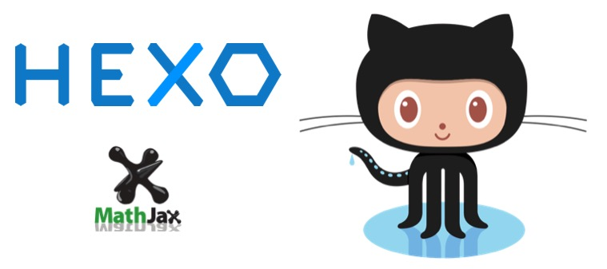

這篇文章會提到：
- 用 Hexo 搭建一個在 github.io 的個人部落格
- 套用 Hexo 模版讓部落格網站看起來更潮
- 合併 MathJax 套件讓用 markdown 寫文章的同時可以加入數學方程式的語法

一直以來的工作和學習筆記都是寫在 evernote 給自己看，偶爾動了念頭想寫個技術部落格，但又因為個人莫名的堅持：就是想把部落格放在 github.io ，可是自己又不熟前端，那就不是申請帳號然後馬上開始寫這麼簡單的事了。
我的需求是：
- host 一定要是 github.io
- 能夠用 markdown 寫文章，並且文章要能顯示數學符號
- 寫完文章能夠輕鬆發表
- 部落格樣式要潮
- 最好有 GA 和 SEO 的功能
抽空研究了一下，發覺絕大多數還是受限於第一點 XD。由於 GitHub 只能幫我們代管靜態網頁，要做到寫完文章並一鍵發佈，我們需要一個部落格框架 hexo，把文章和網頁模版合併編成一個靜態網頁。此外，還需要使用 hexo 的套件 hexo-math 讓他在編成網頁的同時可以讀懂 mathjax 的語法，才能正確顯示數學符號。
準備工作
接下來的工作大部分會在 Mac OSX 的 terminal 底下進行設定
新增 github repo
- 如果你的 github 帳號是
username，就新增一個名稱是username.github.io的 repo - 丟一個檔名是
index.html的檔案到這個 repo 底下，內容要寫 hello world 還是什麼的隨便 - 過幾分鐘就可以在 http://username.github.io 看到你的網頁了
安裝 npm
npm 是一個 node.js 的套件管理工具，裝好 node.js 就會自動裝完 npm 了
|
安裝 Hexo 與主題模版
Hexo
執行完上述命令之後，到這裡找一個喜歡的主題模版，我自己是用Huxblog
依照該 repo 的描述，把模版 clone 回來
接著就會在 hexo-theme-huxblog 的目錄底下，看到一個名為 _config.yml 的檔案。這個設定檔就是之後整個部落格的主要配置，而 hexo-theme-huxblog 就是你未來的部落格的資料夾，將來有新增\修改\刪除文章，裝什麼套件等等，都是在這個資料夾底下進行。
開始設定自己的部落格
做完上面的準備工作之後，就可以開始進行部落格的設定
config.yml
_config.yml 是整個部落格的設定檔，裡面的欄位說明可以在這裡和這裡找到詳細介紹，我就不贅述，把一些背景圖片跟網站描述改成自己想要的就行。稍微提一下路徑的部份，如果要讓你的網站首頁是 username.github.io ，那麼url 與 root 設定如下：
|
此外，之後要 push 到 github 的設定也在這裡先做一下：
做完 config 的設定之後，整個部落格大概就有個雛形了。如果想要預覽一下的話，輸入
|
然後到 localhost:4000 就可以看到調整後的結果。
寫文章
|
上述命令會在hexo-theme-huxblog/source/_posts/ 下面新增：
testpost.md：文章就用 markdown 語法寫在這裡testpost：文章內連的圖片什麼的就放這裡
testpost.md 檔案的前幾行是關於這篇文章的設定，範例如下：
不論是背景圖片與網頁內插入的圖片都放在 testpost 資料夾底下。寫完之後同樣可以用 hexo server 指令，在本機先預覽，確認沒問題再發佈。 但是在網頁背景圖片的部分這時候還沒辦法正常顯示，可以先執行一下 hexo generate 生成靜態網頁，才有辦法正常預覽。
佈署
文章寫好了，主題也設定完了，終於到了發佈的時候。由於前面已經在 _config.yml 中設定過了 push 到 github 的參數，現在我們只要再安裝一個小工具，馬上就可以佈署到 github 上面了！
安裝 hexo-deployer-git
OK! 現在真的可以佈署上去了！
大功告成！網頁現在已經可以在 http://username.github.io 找到囉！
網站中顯示數學符號
整體做下來，連我這個不熟前端的人都一下就搞定了，實在是感謝許多大大無私分享這麼多方便的套件。不過最後，我還是要為自己的部落格加上一個功能。我希望之後能在這邊記錄一些自己學習與工作的筆記，而目前的內容又多與資料科學有關。所以，文章中當然要能夠正確編輯和顯示數學方程式啦！就像這樣～
$$\theta^{n+1}=\theta^n-\eta\nabla C\left( \theta^n\right)$$
所以這時候還要再安裝一個套件 hexo math
之後在執行 hexo server 等指令時，hexo 就會利用 MathJax 來解析文章內的 LaTex 語法，讓數學符號能正式顯示在網頁上囉！